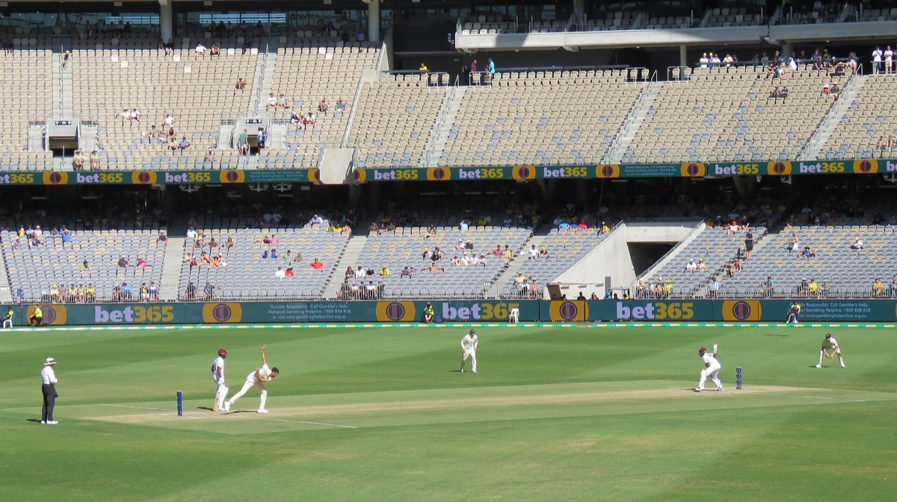

Playable collection
Gaming — 29 browser demos
Adventure, platformer, arcade and puzzle tutorial projects with playable demos and downloadable source.
Explore games ↗1 project
Playable collection
Adventure, platformer, arcade and puzzle tutorial projects with playable demos and downloadable source.
Explore games ↗
Try a different search, tool, or skill area.